Ansible Workshop

Copyright © Computacenter 2023
Workshop Overview ↵
Ansible Windows Enablement Workshop
Welcome to the Ansible Workshop!
Ansible is a radically simple IT automation system. It handles configuration management, application deployment, cloud provisioning, ad-hoc task execution, network automation, and multi-node orchestration.
You will learn about Ansible:
- starting with the basics of understanding foundational command line activities.
- applying what you’ve learned to the Ansible automation controller for your enterprise use cases.
You’ll start off by writing your first steps with Ansible Ad-hoc commands, playbooks, working with variables and much more. Next you’ll get started on automation controller, understand inventory and credential management, projects, job templates, surveys, workflows and more.
After finishing this lab you are ready to start using Ansible for your automation requirements.
Time planning
The time required to do the workshops strongly depends on multiple factors: the length of the workshop. the number of participants, how familiar you are with Linux in general and how much discussions are done in between.
Having said that, the exercises themselves should take roughly 4-5 hours.
Lab Overview
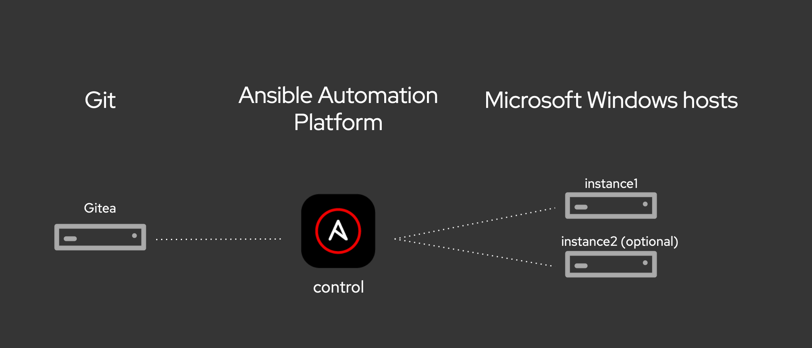
Preparation
Configure Dev Environment
We will be using Visual Studio Code (VScode) as our IDE for Ansible development, we will connect VScode to a (Linux) development host.
I never worked with VSCode ! What do I need to know?
VSCode ist a really powerfull and customizable IDE. Nearly everything you need to work with Textfiles is there or can be added as a Plugin.
These Plugins are the main point for many people to choose VSCode. (wait a moment, isn't that extendability also a reason people use Ansible?)
The unchanged look and feel of VSCode after the first start
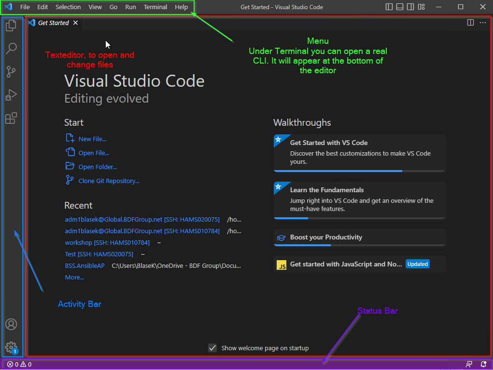
In the Editor Area there is a Walktroughs Section. It is highly advised to take a look at the Guides there even as a long time User you may be surprised by some features or shortcuts.
In the Activity Bar there are alot of important things present that you will need on a regular basis. From top to bottom:
+ File Explorer
* Expands to a file explorer where you can see the folder structure.
Maybe you need to select a folder first
+ Search/Replace
* Search and replace in your working directory accross all files
+ Git / Source Control
* Use versioncontrol to commit your change, switch branches
and push/pull to a remote destination
+ Run / Debug
* not really needed for ansible
+ Extensions
* All the Extension in a single place ready to search/download/install/uninstall
+ User Account
* Your User Account
+ VSCode Settings
* All Settings, preferences, themes, commands and a lot more to explore
This is small overview for the vanilla VSCode experience. We will add more functionality in the preparation phase.
Add the Remote Explorer extension as your first Plugin.

I never worked with VSCode ! What changed?
Please wait a moment for it to finish. Afterwards there will be a new Icon in your Activity Bar it appears right under the Extensions Icon. The Status Bar also changed a bit in the left corner. There is a file opening in the Editor Pane with detailed Informations and Settings for the plugin you just installed. Sometimes it even shows a small demo.
VScode has now a Remote Explorer icon in the Activity Bar, click on it, we will add a new SSH connection. Click on Open SSH config file, the icon. Use the personal .ssh\config file, the first entry in the list.

Input the following configuration and save the file (use Ctrl+S or File and Save) afterwards.
Note
You trainer will provide you with the exact values for HostName and User!
After saving, if the new SSH target does not show up, click the Refresh button when hovering above the Remote tab.
Do a right-click on the SSH target Ansible-Dev-Node and choose Connect in current window.... You will be asked two questions, what kind of platform the target node is (choose Linux), afterwards input your password. On the first connection you need to enter your password multiple times.
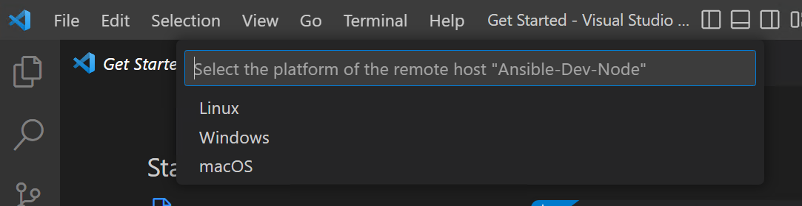
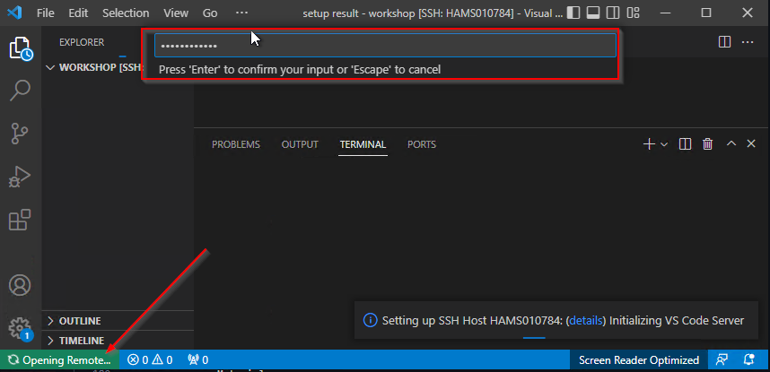
Give it some time for installing the VScode plugin (in ~/.vscode-server), a successful connection is established once a green SSH: Ansible-Dev-Node box is shown in the VScode footer. If you open a Terminal now, you will be on the remote host and have a remote shell and linux functionality.
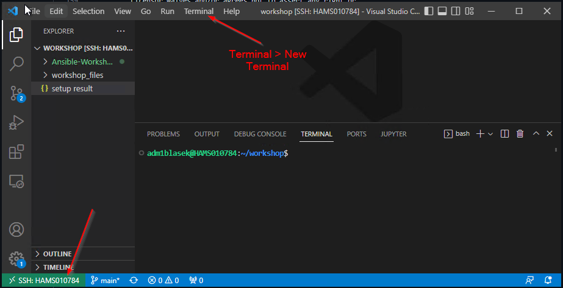
Install Ansible & dependencies
You need to install Ansible (and a couple of Python dependencies) yourself. Copy (the code block has a copy button on the right) and paste (right-click in the terminal window) the command in your terminal and hit Enter.
What is installed here?
ansible-core- the Ansible binaries and a subset of available modulesansible-lint- a Best-Practice checker for Ansible (not used or discussed in detail today, is a dependency for the Ansible VScode extension)pywinrmandpywinrm[kerberos]- Python libraries for Windows Remote Management
The Ansible binary (and other dependencies) were installed in your home directory and is (not yet) usable. We need to adjust the PATH. The following command adds a line to the end of your (personal) .bashrc file. Copy and paste the command in your terminal and hit Enter.
Afterwards, source the file for the changes to take effect:
Useful VScode Extension
Tip
This is an optional step, it may help with the first steps and is useful for further development with Ansible.
Visual Studio Code has a huge Marketplace with loads of useful Plugins or feature extension, one of which is especially useful for Ansible Development and is directly from RedHat and itself is developed with all code open source.

Go to Extensions and search for redhat.ansible. Use the extension from Red Hat, this one is activly maintained. In the extension description, click the Install button.
What do I need this extension for and what changed?
This extension adds some cool features to VSCode that are purely ansible specific and need ansible and ansible-lint on your remote host to work.
If VSCode identifies your file as an "Ansible" file it will change its behaviour. You can check this on the right side of your Status Bar at the bottom. .yml and .yaml files should be identified as YAML Language. Which is correct but we want to change that behaviour to be even "more" correct.

Click on YAML in the Status Bar. VSCode opens a dialog at the top. Select Configure File Association for '.yml'. Then select Ansible.
 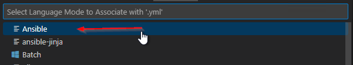
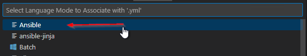
The language in the Status Bar should now look like this:
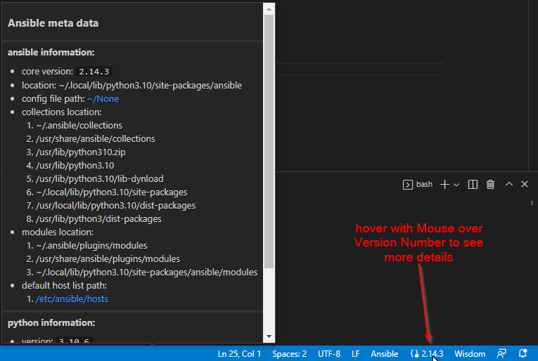
For more information read the official instructions, please
Configure Azure DevOps and Git
In Azure DevOps code is stored in repositories. These repositories on the other hand are kept in a project. Every project can have multiple repositories.
Login to Azure DevOps and choose the Project in which you want to create your Repository. Every project, by default, already has one repository, we will create an additional one for our personal workshop content.
In the top, open the drop-down menu and choose New repository.
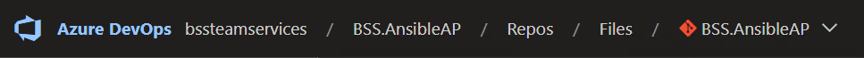
On the right of your browser window, enter a name Ansible-Workshop-usernamefor your repository, replace username with your username abbreviation. Leave all other configuration as-is.
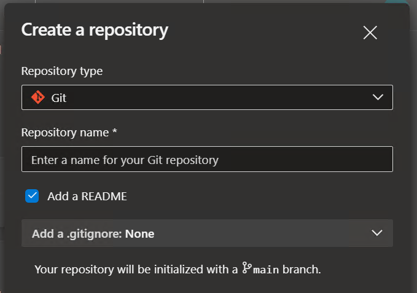
Once your repository (the place where your code (read: Ansible content) will be stored) is created, click the Clone button on the right.
Now, click the button Generate Git credentials:

Tip
Store the password (access token) now, you won't be able to retrieve it again! Also, make note of your username, we need it a bit later on.
All right, almost done!
Now, let's clone the repository in your home directory on the Ansible Development node.
Click on the Clone button again and copy (by clicking Copy clone URL to clipboard) the HTTPS URL.
In the terminal of the dev node, paste the content with a right-click after typing git clone:
Change into the directory (with cd).
To work and interact with Git, we will need to configure it slightly. Run the following commands:
Warning
These are only examples, use your real Name and E-Mail address!
This is used to identify, who made the code changes, which is fundamental for collaborative work on your Ansible playbooks.
Login to AAP
There are a number of constructs in the Automation Controller UI that enable multi-tenancy, notifications, scheduling, etc. However, we are only going to focus on a few of the key constructs that are required for this workshop today.
- Credentials
- Projects
- Inventory
- Job Template
Your Automation Controller instance url and credentials were supplied to you by the trainer.
Use the SAML login option, you may need to open the icognito browser, if you need to access with a different user for single-sign on.
Create SCM Credential
Credentials are utilized by Controller for authentication when launching jobs against machines, synchronizing with inventory sources, and importing project content from a version control system.
There are many types of credentials including machine, network, and various cloud providers. For this workshop, we are using machine and source control credentials.
Select CREDENTIALS from the left hand panel under resources.

We need to access our source code repository, where our automation projects will live.
Click the icon and add a new credential.
Complete the form using the following entries, replace username with your username abbreviation:
| Key | Value | |
|---|---|---|
| Name | Azure DevOps username | |
| Description | SCM credential for username | |
| Organization | Choose your organization | |
| Credential Type | Source Control | |
| Username | Your name from Azure DevOps | Username as shown in the Clone button in Azure DevOps |
| Password | Your password | The password you retrieved when creating the Git credentials |
Select SAVE 
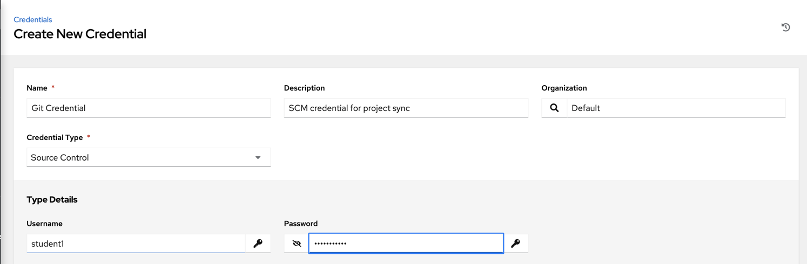
Create Machine Credential
We need to access our Windows Test machines over WinRM, let's create a machine credential for that.
Click the icon and add another new credential.
Complete the form using the following entries, again, replace username with your username abbreviation:
| Key | Value | Notes |
|---|---|---|
| Name | Windows Test Host username | |
| Organization | Default | |
| Type | Machine | |
| Username | Login name | Ask your trainer for assistance! |
| Password | password |
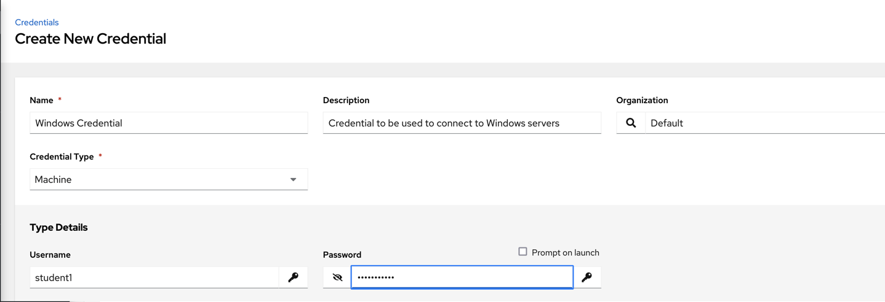
Select SAVE
Perfect, all done for now, you are prepared for all further exercises!
Ended: Workshop Overview
Exercises ↵
1 - Ad-hoc commands
For our first exercise, we are going to run some ad-hoc commands to help you get a feel for how Ansible works. Ansible ad-hoc commands enable you to perform tasks on remote nodes without having to write a playbook. They are very useful when you simply need to do one or two things quickly, to many remote nodes.
Ad-hoc commands can be run on the command line and with the Ansible Automation Platform. We will try both ways and switch between running ad-hoc commands on the CLI and in the AAP.
Preparation
Ensure that you are in your project folder and that you can run the Ansible CLI utility, run the following command:
If you get the message fatal: not a git repository you are not in the correct folder. In the correct folder expect this line: nothing to commit, working tree clean.
The output looks something like this:
[student@ansible-1 workshop_project]$ ansible --version
ansible [core 2.14.0]
config file = /etc/ansible/ansible.cfg
configured module search path = ['/home/student/.ansible/plugins/modules', '/usr/share/ansible/plugins/modules']
ansible python module location = /usr/lib/python3.9/site-packages/ansible
ansible collection location = /home/student/.ansible/collections:/usr/share/ansible/collections
executable location = /usr/bin/ansible
python version = 3.9.13 (main, Nov 9 2022, 13:16:24) [GCC 8.5.0 20210514 (Red Hat 8.5.0-15)] (/usr/bin/python3.9)
jinja version = 3.1.2
libyaml = True
The output gives some useful informations, the most important one are these:
config file = /etc/ansible/ansible.cfg- The currently used configuration file for Ansiblepython version = 3.9.13- The Python interpreter used on the Controller (there may be multiple Python version installed...)
Don't worry if your ansible --version command outputs config file = None, you will not need one currently.
Let's take a look at an example Ansible configuration.
This is an example configuration from a different Ansible controller.
[student@ansible-1 workshop_project]$ cat /etc/ansible/ansible.cfg
[defaults]
stdout_callback = yaml
connection = smart
timeout = 60
deprecation_warnings = False
action_warnings = False
system_warnings = False
devel_warning = False
host_key_checking = False
collections_on_ansible_version_mismatch = ignore
retry_files_enabled = False
interpreter_python = auto_silent
inventory = /home/student/lab_inventory/hosts
[persistent_connection]
connect_timeout = 200
command_timeout = 200
Step 1 - Test connection
Step 1.1 - On CLI
Ansible needs to know which hosts are targeted for the automation, therefor all Ansible content development starts with defining a inventory and sorting your hosts into groups in it. For most use cases, a inventory in the .ini format is the easiest to work with. Let's create a simple inventory with a single group called windows and put your test host in it. Create a file hosts.ini (you could leave out the file extension, by default, Ansible asumes that the file is formated in the ini format).
Add the following inventory definition and variables:
[windows]
NODEName
[windows:vars]
ansible_connection= winrm
ansible_winrm_transport= kerberos
ansible_port= 5986
ansible_host= "{{ inventory_hostname }}.global.bdfgroup.net"
ansible_user= "Your User"
Warning
Set the correct NODEName, as well as the correct value for ansible_user. Ask your trainer for assistance!
The inventory file is in .ini format, this is one of the possible formats the inventory can be provided. Ansible itself parses the inventory and uses a JSON representation, let's take a look on how Ansible sees our inventory:
The command above outputs info about all hosts in the inventory, the groups in which every host is in and which variables (mostly connection variables) are defined for every host. The ansible-inventory utility has more functionality, use the --help parameter.
Save some time and leave out some parameters?
You need to provide the path to your inventory file with the -i (--inventory) parameter everytime when executing the command.
If you don't want to add -i hosts.ini everytime you run a command, you can specify it in an ansible.cfg file in your working directory.
Ansible now knows which inventory file should be used for your project, now you can run the command like this:
All right, we have an inventory, let's test if we can reach our target node in the windows group. We will use the ansible utility to execute an ad-hoc command and will provide the ansible.windows.win_ping module. The win_ping module makes sure our windows hosts are responsive. This is not a traditional (ICMP) ping, but actually verifying both connectivity and authentication to the host.
Execute the following command:
The ad-hoc command expects a group to target (here it is the windows group) and a module with optional arguments.
Failure
Well, this didn't went well, we encountered an error.
The module was not found, let's see which collections are installed (this is the place where modules are stored).
Additional infos to modules and collections
Ansible modules are units of code that can control system resources or execute system commands. Ansible provides a module library that you can execute directly on remote hosts or through playbooks. Modules (and much more) are stored in Collections, these are a distribution format for Ansible content.
Take a look at the Ansible documentation if you need further information:
Run the following command to list all installed collections:
Failure
Another error, this one states that no collections (except the builtin collection ansible.builtin) are installed.
Let's install the missing collection:
Got an SSL:CERTIFICATE_VERIFY_FAILED error?
If you see the following error:
$ ansible-galaxy collection install ansible.windows
Starting galaxy collection install process
Process install dependency map
[WARNING]: Skipping Galaxy server https://galaxy.ansible.com. Got an unexpected error when getting available versions of collection ansible.windows: Unknown error when attempting to call Galaxy at 'https://galaxy.ansible.com/api/': <urlopen error [SSL:
CERTIFICATE_VERIFY_FAILED] certificate verify failed: self-signed certificate in certificate chain (_ssl.c:997)>
ERROR! Unknown error when attempting to call Galaxy at 'https://galaxy.ansible.com/api/': <urlopen error [SSL: CERTIFICATE_VERIFY_FAILED] certificate verify failed: self-signed certificate in certificate chain (_ssl.c:997)>
Don't worry, you can add the -c (--ignore-certs) parameter, it instructs to ignore certificate validation errors.
Ok, looks good, try the ad-hoc command again.
Failure
Another error?
A missing dependency, Ansible modules are (mostly) written in Python (or in Powershell for Windows), they sometimes need additional Python modules or libraries. Let's install the missing depedency:
We installed the pywinrm Python module with the Python package manager for the Python version Ansible is running with, this is needed for the initial connection from the Ansible Controller to the target host.
Let's install another missing dependency:
This module is needed because of the configured WinRM transport method. If we would have run the ad-hoc command, the error message would have stated the missing package.
Ok, one more try, run the ad-hoc command again.
Failure
What? Another error?? Host unreachable??
kerberos: authGSSClientInit() failed: (('No credentials were supplied, or the credentials were unavailable or inaccessible', 458752), ...
Looks like we can't authenticate against the Windows target node.
Authentication of Ansible (or in effect, us) against the Windows target node needs a Kerberos ticket.
Do you remember the ansible_user variable in your inventory file? You referenced your personal (Admin) user there, we need to create a Kerberos ticket on the Ansible Dev Node for this one. Ansible uses this user to connect to the target node.
Run the following command and input the password to authenticate your Admin-User:
Tip
Naturally, replace <username>.
Kerberos is picky when it comes to spelling and capitalization, you must use the exact spelling when issueing your Kerberos ticket as in the value of the ansible_user variable.
You can check if the ticket was granted and which principal is used with klist.
Ok, one last try with the ad-hoc command!
[student@ansible-1 workshop_project]$ ansible -i hosts.ini windows -m ansible.windows.win_ping
student1-win1 | SUCCESS => {
"changed": false,
"ping": "pong"
}
Success
Finally, everything in place! We can connect and authenticate with our Windows target node.
One of the hardest parts in Ansible is, getting the initial communication working. With Windows this is especially true, when things like Kerberos come into play. But, you made it! From now on it should get easier.
Step 1.2 - In AAP
After running the ad-hoc command on the command line, let's do it in the Automation Platform.
As before, we will need an Inventory.
Click Inventories on the left panel, and then click the name of our Inventory Workshop Inventory. Now that you are on the Inventory Details page, we will need to go select our Host. So click HOSTS.
Next to each host is a checkbox. Check the box next to each host you want to run an ad-hoc Command on. Select the Run Command button.

This will pop up the Execute Command window. From here is where we can run a single task against our hosts.
Let’s start with something really basic - pinging a host.
Fill out this form as follows
| Key | Value | Note |
|---|---|---|
| Module | win_ping |
|
| Arguments | Intentionally blank | |
| Limit | This should display the host you selected in the previous step |
Click the Next button
| Key | Value | Note |
|---|---|---|
| Execution environment | BSS EE - Windows |
Click the Next button
| Key | Value | Note |
|---|---|---|
| Machine credential | Windows Test Host username | Your personal Machine credential you created before |
Once you click LAUNCH you will be redirected to the Job log. Every job and action in Automation Controller is recorded and stored. These logs can also be exported automatically to another logging system such as Splunk or ELK.
The output tab is shown by default. Any output generated by the task is displayed here.

The details tab shows information on when the task was executed, by whom, with what credential and what hosts were affected.
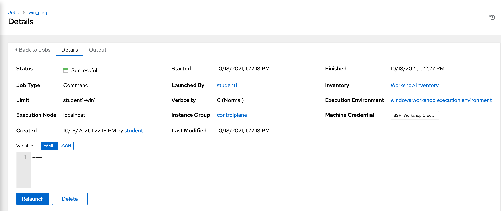
The results returned will be different depending on which module is used, as they all handle and deal with different data sets depending on the task. No matter which module is used, you will always see a color coded STATUS of either SUCCESS, FAILURE, CHANGED, or SKIPPING.
Step 2 - Get infos about target
Ad-hoc commands are perfect to gather informations about your target system.
Step 2.1 - On CLI
We will now take a look at your Windows node configuration. The setup module queries the remote host for various data and returns that data as Ansible facts. This data is useful to determine things such as operating system version, hardware configuration, among other data points. This can then be used in your playbook for all sorts of reasons such as determining whether a task should even run, or determining what the name of a package should be based upon the operating system version.
The setup module will run automatically at the beginning of every playbook, unless configured not to, so that this data is always available to your playbook.
Run the following command:
You are seeing loads of useful informations and you can use every bit as variables in your playbooks later on!
Step 2.2 - In AAP
After running the ad-hoc command to gather infos on the command line, let's do it again in the Automation Platform.
You need to go back to Inventories Workshop Inventory Hosts Activate Checkbox of Windows host Click Run command.
Lets go ahead and run the setup module to look at the output. Fill out the EXECUTE COMMAND form again with this info.
| Key | Value | Note |
|---|---|---|
| Module | setup |
|
| Arguments | Intentionally blank | |
| Limit | This should display the host you selected in the previous step |
Click the Next button
| Key | Value | Note |
|---|---|---|
| Execution environment | BSS EE - Windows |
Click the Next button
| Key | Value | Note |
|---|---|---|
| Machine credential | Windows Test Host username | Your personal Machine credential you created before |
You should see output like this:

(Note: If you click the three dots shown on line 21 in the above output, you will see all the facts returned by the setup module.)
Step 3 - Run PS command
Now let’s see how we can run a PowerShell command and view the output using the ansible.windows.win_shell module.
Step 3.1 - On CLI
You are getting more and more familiar with ad-hoc commands, now you need to provide additional arguments to the used Ansible module.
Run the following command to run the Get-Service Powershell command:
The output looks something like this:
student@ansible-1 workshop_project]$ ansible -i hosts.ini windows -m ansible.windows.win_shell -a "Get-Service"
student1-win1 | CHANGED | rc=0 >>
Status Name DisplayName
------ ---- -----------
Running AmazonSSMAgent Amazon SSM Agent
Stopped AppIDSvc Application Identity
Stopped AppMgmt Application Management
Stopped AppReadiness App Readiness
Stopped AppXSvc AppX Deployment Service (AppXSVC)
Stopped AWSLiteAgent AWS Lite Guest Agent
Running BFE Base Filtering Engine
Stopped BITS Background Intelligent Transfer Ser...
Running CertPropSvc Certificate Propagation
Stopped cfn-hup CloudFormation cfn-hup
Stopped ClipSVC Client License Service (ClipSVC)
...
The output is not green anymore as before, but yellow, the output also states that something was CHANGED.
We do know that nothing changed, but for Ansible any command could be provided through Powershell, it can't predict what will happen or if the desired state is already reached. This is called idempotency and the win_shell (and win_command) module do not support this. All other Windows modules work idempotent, try to use these instead of win_shell or win_command.
Step 3.2 - In AAP
You know the drill, go to the spot to run ad-hoc commands against the Windows target node.
Let’s fill out the form again, but this time use the win_shell module to execute the Get-Service Powershell command.
| Key | Value | Note |
|---|---|---|
| Module | win_shell |
|
| Arguments | Get-Service |
|
| Limit | This should display the host you selected in the previous step |
Click the Next button
| Key | Value | Note |
|---|---|---|
| Execution environment | BSS EE - Windows |
Click the Next button
| Key | Value | Note |
|---|---|---|
| Machine credential | Windows Test Host username | Your personal Machine credential you created before |
Launch the job and view the results. You will see that it returns a direct output of what the Powershell command returned. This data can be stored to a variable and directly parsed inside your Ansible playbook later on.
And run it one more time with the Get-Process Powershell command.
| Key | Value | Note |
|---|---|---|
| Module | win_shell |
|
| Arguments | Get-Process |
|
| Limit | This should display the host you selected in the previous step |
Click the Next button
| Key | Value | Note |
|---|---|---|
| Execution environment | BSS EE - Windows |
Click the Next button
| Key | Value | Note |
|---|---|---|
| Machine credential | Windows Test Host username | Your personal Machine credential you created before |
The difference between ansible.windows.win_shell and ansible.windows.win_command is that win_command arguments will not be processed through the shell, so variables like $env:HOME and operations like <, >, |, and ; will not work (use the ansible.windows.win_shell module if you need these features). The ansible.windows.win_command module is much more secure as it’s not affected by the user’s environment.
End Result
Ad-hoc commands may be useful to run once in a while. However, as automation continues to grow within an environment, they are used less often.
As you saw, doing stuff on the command-line requires a lot more configuration and dependency handling. The AAP abstracts most of the stuff from you (e.g. by bundling all necessary dependencies in a container image). Still, development of Ansible content is done with Ansible on the Command-Line, you will get used to it, the more you try!
Hint
When a task is performed on a Windows server, Ansible is smart enough to know whether a reboot is required after executing that task. The below is part of the output of the command to remove the IIS feature. The output of this task can be used in subsequent tasks, like whether or not to reboot before continuing.

All modules used in the previous exercises are described in detail in the Ansible documentation.
2 - Writing playbooks
Let’s get started writing our first Ansible playbook!
The playbook is where you list the steps you would like to automate into a repeatable set of plays and tasks. To begin, we will setup our directory structure for storing our playbooks. This directory structure will sync with a source control management (SCM) system to version our playbooks. We will be using git as our SCM.
A playbook can have multiple plays and a play can have one or more tasks. The goal of a play is to map a group of hosts. The goal of a task is to implement modules against those hosts.
For our first playbook, we are only going to write one play with three tasks.
All of our playbooks will be stored in a single git repository. Multiple users can use the same repository and git will manage file conflicts and versions. In this environment, each student has sole access to a private repository.
Overview
Starting at this task we are going to use Visual Studio Code as our editor. In addition, we will use Azure DevOps for source code control. This will allow us to minimize development work on the linux command line. Other editors or source code solutions can be used, but this will show the general workflow.
Step 1: Create directory structure
There is a best practice on the preferred directory structures for playbooks. We strongly encourage you to read and understand these practices as you develop your Ansible skills. That said, our playbook today is very basic and a complex directory structure is not necessary.
Instead, we are going to create a very simple directory structure for our playbook, and add just a couple of files.
Open Visual Studio Code on the remote host and select your git repository as folder.
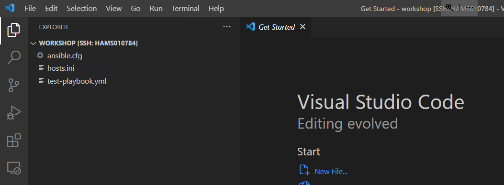
Step 2: Create a directory called iis_basic and a file called
install_iis.yml
You can also do this with VS Code.
Hover over the WORKSHOP_PROJECT section and click the New Folder button. Create a folder called iis_basic. Then click that folder so it is
selected. Right click the new folder you’ve created and create a file called install_iis.yml.
You should now have an editor open in the right pane that can be used for creating your playbook.

Step 2: Defining your Play
Now that you are editing install_iis.yml, let’s begin by defining the play and then understanding what each line accomplishes
---Defines the beginning of YAMLname: Install the iis web serviceThis describes our playhosts: windowsDefines the host group in your inventory on which this play will run against
Step 3: Adding tasks to your Play
Now that we’ve defined your play, let’s add some tasks to get some things done. Align (vertically) the t in task with the h in hosts. Yes, it does actually matter. In fact, you should make sure all of your playbook statements are aligned in the way shown here.
You also must use spaces for indentation. Tabs are not valid YAML syntax.
If you want to see the entire playbook for reference, skip to the bottom of this exercise.
tasks:
- name: Install iis
ansible.windows.win_feature:
name: Web-Server
state: present
- name: Start iis service
ansible.windows.win_service:
name: W3Svc
state: started
- name: Create website index.html
ansible.windows.win_copy:
content: "{{ iis_test_message }}"
dest: C:\Inetpub\wwwroot\index.html
- name: Show website address
ansible.builtin.debug:
msg: "Open an RDP session and open http://{{ ansible_host }} in a browser."
tasks:This denotes that one or more tasks are about to be defined- name:Each task requires a name which will print to standard output when you run your playbook. Therefore, give your tasks a name that is short, sweet, and to the point.
Additional info regarding the name parameter
The name key is optional, still, it is highly advisable to use it, as this is the output you will be getting when executing the playbook.
When ommiting the name parameter, your playbook only will output that it does something with the ansible.windows.win_feature module, but not what it does exactly.
These three lines are calling the Ansible module win_feature to install the IIS Web Server. Click here to see all options for the win_feature module.
The next few lines are using the ansible module win_service to start the IIS service. The win_service module is the preferred way of controlling services on remote hosts. Click here to learn more about the win_service module.
In this task, we use the win_copy module to create a file with specific contents in it. We are getting a little more complex here as we are using a variable to source the contents. We won’t go into the variables just yet, since they will be showcased in a later lesson.
This task uses the debug module to post a message at the end of playbook execution.
Try to run your playbook! Execute the following command:
Warning
At the moment your playbook will not run properly. There is an undefined Variable. We will solve this problem in AAP!
Step 4: Saving your Playbook
Now that you’ve completed writing your playbook, it would be a shame not to keep it. Click File Save from the menu.
And that should do it. You should now have a fully written playbook called install_iis.yml.
But wait!!! We haven’t committed our changes from our local copy to the remote git server.
Add the file (to the local staging area).
Or if you already in the created folder just the filename
Commit the change with a short message.
This message is intended to describe the changes you made so that others (including yourself) better understand what is changing when comparing versions.
Now you need to push the committed changes to your repository.
Click the Source Code icon as shown below (It is the middle on the far left of the page that has the blue circle with # 1 in it)

Type in a commit message such as Adding install_iis.yml in the text box at the top of the sidebar. Click the check box above to commit. This message is intended to describe the changes you made so that others (including yourself) better understand what is changing when comparing versions.

Now you need to push the committed changes to your repository.
On the bottom left blue bar, click the section that contains the circular arrows to push the changes.

This may take as long as 30 seconds to push. After your first push, you may get a pop-up message asking if you would like to periodically run git fetch. Because you’re the only one working on the git repo, you can click Yes or No.

If you’re interested in validating the code is in git, you can connect to Azure DevOps to verify.
You are ready to automate!
Note
Ansible (well, YAML really) can be a bit particular about formatting especially around indentation/spacing. The Ansible documentation has describe the YAML Syntax a bit more and it will save you some headaches later.
In the meantime, your completed playbook should look like this. Take note of the spacing and alignment.
---
- name: Install the iis web service
hosts: windows
tasks:
- name: Install iis
ansible.windows.win_feature:
name: Web-Server
state: present
- name: Start iis service
ansible.windows.win_service:
name: W3Svc
state: started
- name: Create website index.html
ansible.windows.win_copy:
content: "{{ iis_test_message }}"
dest: C:\Inetpub\wwwroot\index.html
- name: Show website address
ansible.builtin.debug:
msg: "Open an RDP session and open http://{{ ansible_host }} in a browser."
3 - Sync Project to AAP
A job template in AAP is a definition and set of parameters for running an Ansible job. Job templates are useful to execute the same job many times. Before you can create a job template with a new playbook, you must first sync your Project so that Controller knows about it.
Create Project
We already have created a project and pushed it to our remote Git host (Azure DevOps). Let's create a project which is logical collection of Ansible playbooks, stored in a (remote) single source of truth.
Click Projects and then the icon.
Complete the form using the following values, replace username with your username abbreviation:
| Key | Value |
|---|---|
| Name | Ansible Workshop Project username |
| Description | Workshop Project for username |
| Organization | Choose your organization |
| Execution Environment | BSS EE - Windows |
| Source Control Type | Git |
Now, the form changes, input the following values:
| Key | Value | Note |
|---|---|---|
| Source Control URL | https://... | Input your HTTPS Git URL |
| Source Control Credentials | Azure DevOps username | Choose your Git credential |
| Options | Update Revision on Launch |
Click SAVE . Your project should sync automatically, otherwise click Projects and then click the sync icon next to your project. Once this is complete, you can create the job template.
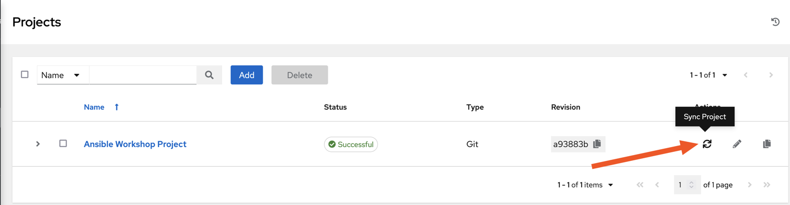
Create Job Template
Select Templates.
Click the icon, and select Job Template.
Complete the form using the following values, replace username with your username abbreviation:
Danger
Your playbook targets the windows group. We have all test hosts in the inventory Workshop Example CC, you must place a limit on your job template!
If you target the complete windows group, you will automate all hosts, even those of your colleagues!
| Key | Value | Notes |
|---|---|---|
| Name | IIS Basic Job Template username | |
| Description | Template for the iis-basic playbook | |
| Job Type | Run | |
| Inventory | Workshop Inventory | |
| Project | Ansible Workshop Project username | |
| Execution Environment | BSS EE - Windows | |
| Playbook | iis_basic/install_iis.yml |
|
| Credentials | Windows Test Host username | |
| Limit | Your single host as in your local inventory! | Do not target the windows group! |
| Options | Enable Fact Storage |
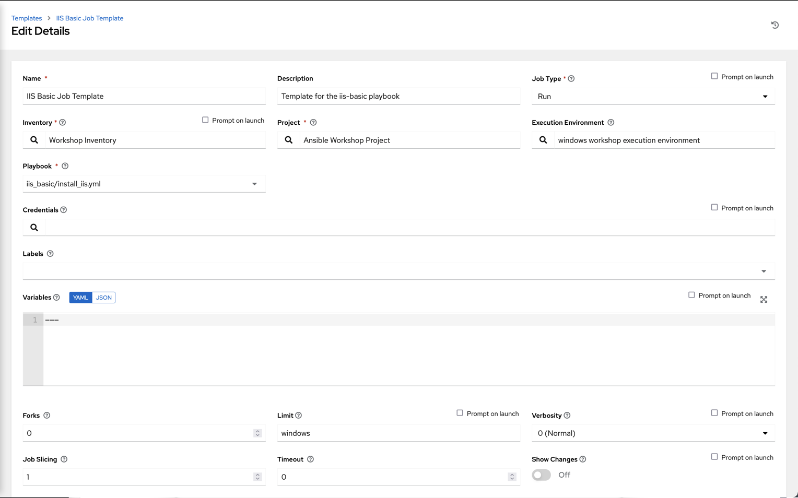
Danger
Did you set the limit?
Click SAVE .
Add Survey
On the resulting page, select the Survey tab and press the Add button 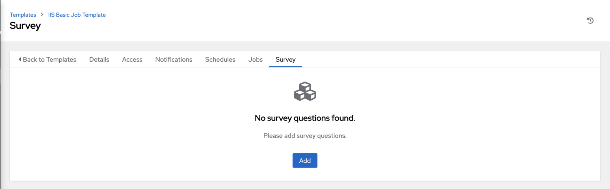
Complete the survey form with following values
| Key | Value | Note |
|---|---|---|
| QUESTION | Please enter a test message for your new website | |
| DESCRIPTION | Website test message prompt | |
| ANSWER VARIABLE NAME | iis_test_message |
|
| ANSWER TYPE | Text | |
| MINIMUM/MAXIMUM LENGTH | Use the defaults | |
| DEFAULT ANSWER | Be creative, keep it clean, we’re all professionals here |
After configuring your survey, click Save. On the resulting page, turn on the survey you just created.
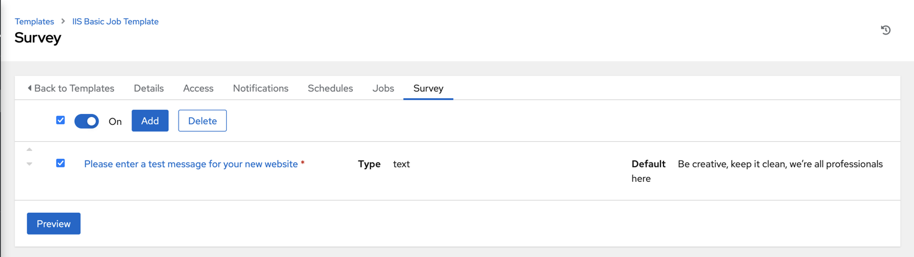
Tip
You need to activate your survey with the slider!
The playbook failed locally, what now?
Remember that your playbook did not run successful on the command-line because of a undefined variable?
In the survey above we defined a default value for the variable, you could do this locally as well.
Running Job Template
Now that you’ve successfully created your Job Template, you are ready to launch it. Once you do, you will be redirected to a job screen which is refreshing in real time showing you the status of the job.
Select TEMPLATES and Click the rocketship icon  for the IIS Basic Job Template
for the IIS Basic Job Template
When prompted, enter your desired test message
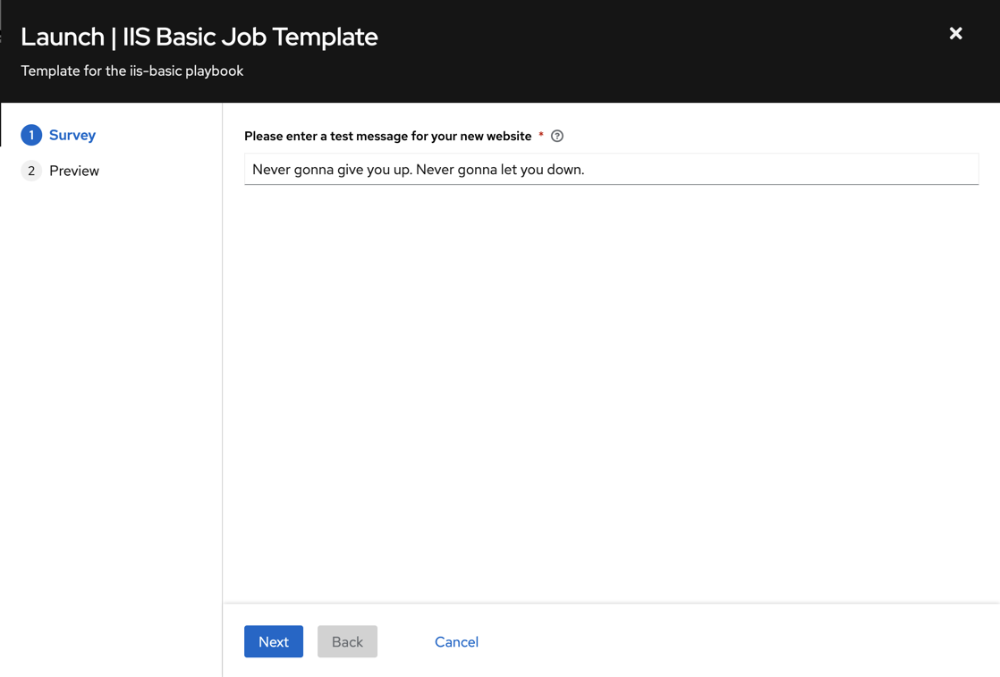
Select NEXT and preview the inputs.
Select LAUNCH 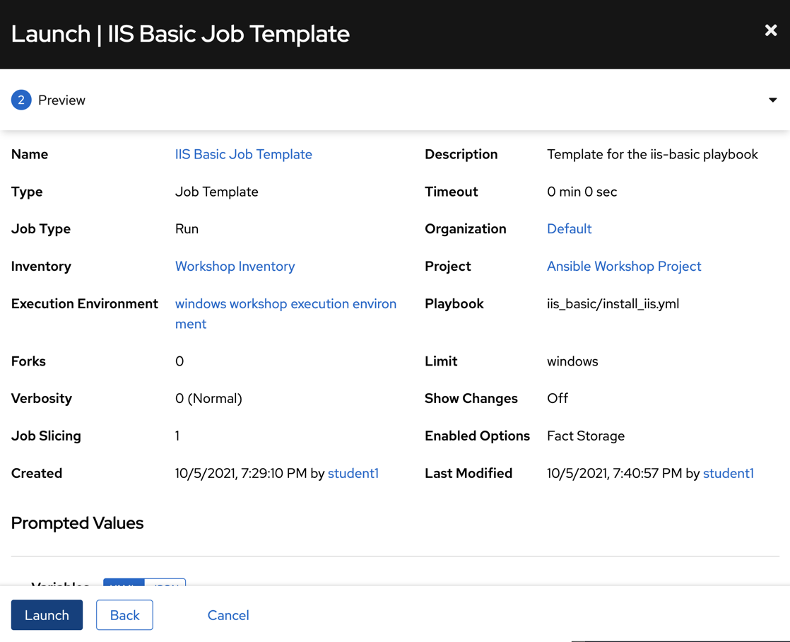
Sit back, watch the magic happen.
Once again you should be presented with a Job log page. Selecting the Details tab should show you the variable you passed into the playbook among other details.
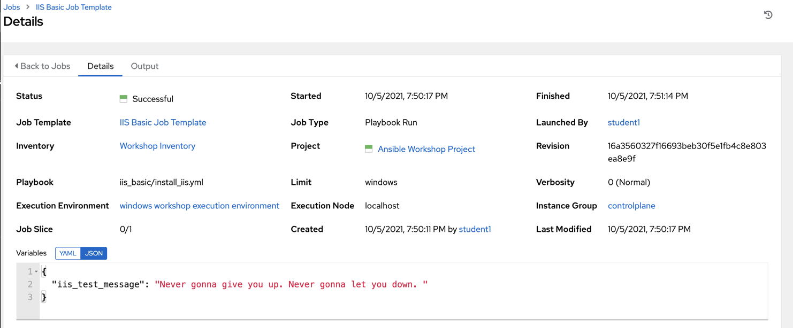
Next you will be able to see details on the play and each task in the playbook.
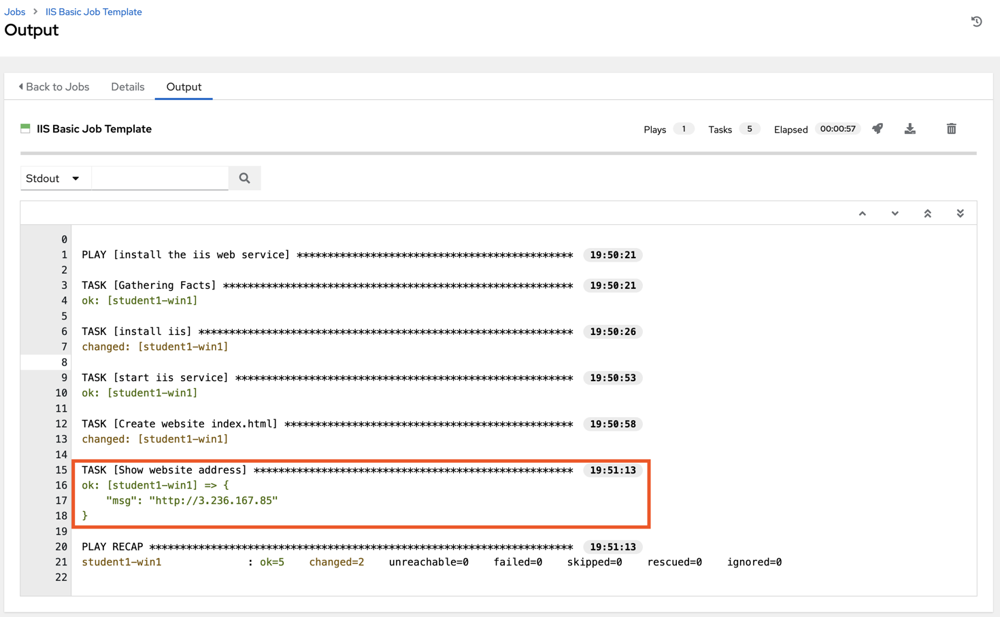
When the job has successfully completed, the last task tells us what to do. Connect with RDP to the node, open a browser and input http://localhost.
If all went well, you should see something like this, but with your own custom message of course.
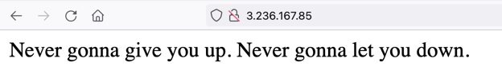
Note
As these are test hosts only, the firewall does not allow external access to the webserver, therefor we need to check this locally.
Optional
Now that you have IIS Installed, create a new playbook called remove_iis.yml to stop and remove IIS.
Hint
First stop the W3Svc service using the win_service module, then delete the Web-Server service using thewin_feature module.
Optionally, use the win_file module to delete the index page.
Solution needed?
This playbook stops and removes the IIS service.
---
- name: Remove the IIS web service
hosts: windows
tasks:
- name: Stop IIS service
ansible.windows.win_service:
name: W3Svc
state: stopped
- name: Uninstall IIS
ansible.windows.win_feature:
name: Web-Server
state: absent
- name: Remove website index.html
ansible.windows.win_file:
path: C:\Inetpub\wwwroot\index.html
state: absent
End Result
At this point in the workshop, you’ve experienced the core functionality of Automation Controller. But wait… there’s more! You’ve just begun to explore the possibilities of Automation Controller. The next few lessons will help you move beyond a basic playbook.
4 - Advanced playbook concepts
Previous exercises showed you the basics of Ansible playbooks. In the next few exercises, we are going to teach some more advanced ansible skills that will add flexibility and power to your automation.
Ansible exists to make tasks simple and repeatable. We also know that not all systems are exactly alike and often require some slight change to the way an Ansible playbook is run. Enter variables.
Variables are how we deal with differences between your systems, allowing you to account for a change in port, IP address or directory, etc..
Loops enable us to repeat the same task over and over again. For example, lets say you want to start multiple services, install several features, or create multiple directories. By using an ansible loop, you can do that in a single task.
Handlers are the way in which we restart services. Did you just deploy a new config file, install a new package? If so, you may need to restart a service for those changes to take effect. We do that with a handler.
For a full understanding of variables, loops, and handlers; check out the Ansible documentation on these subjects.
To begin, we are going to create a new playbook, but it should look very familiar to the one you already created before.
Step 1 - Create directory structure
Within Visual Studio Code, create a new directory in your git repo and
create a site.yml file.
In the Explorer accordion you should have a WORKSHOP_PROJECT section where
you previously made iis_basic.

Create a folder called iis_advanced and a file called site.yml
Hover over the WORKSHOP_PROJECT section and click the New Folder button
Type iis_advanced and hit enter. Now, click that folder so it is
selected.
Right-click the iis_advanced folder and select New File.
Type site.yml and hit enter.
You should now have an editor open in the right pane that can be used for creating your playbook.
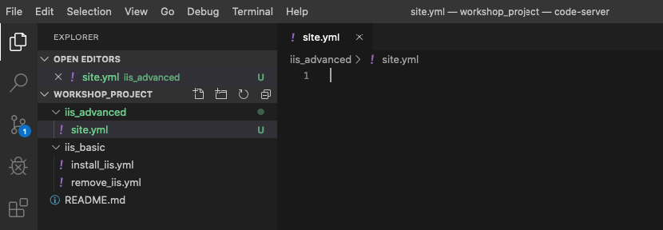
Step 2 - Play definition
Add a play definition and some variables to your playbook. These include addtional packages your playbook will install on your web servers, plus some web server specific configurations.
---
- name: This is a play within a playbook
hosts: windows
vars:
iis_sites:
- name: 'Ansible Playbook Test'
port: '8080'
path: 'C:\sites\playbooktest'
- name: 'Ansible Playbook Test 2'
port: '8081'
path: 'C:\sites\playbooktest2'
iis_test_message: "Hello World! My test IIS Server"
Step 3 - Add tasks
Add a new task called install IIS. After writing the playbook, click File Save to save your changes.
tasks:
- name: Install IIS
ansible.windows.win_feature:
name: Web-Server
state: present
- name: Create site directory structure
ansible.windows.win_file:
path: "{{ item.path }}"
state: directory
loop: "{{ iis_sites }}"
- name: Create IIS site
community.windows.win_iis_website:
name: "{{ item.name }}"
state: started
port: "{{ item.port }}"
physical_path: "{{ item.path }}"
loop: "{{ iis_sites }}"
notify: restart iis service
Did you spot that we used two different Ansible collections?
This is not an error, the Windows modules are stored in two collections, ansible.windows and community.windows.
Which may seem odd, but this makes sense (if know about the background).
The modules in the ansible.windows collection are certified by Red Hat, if any bugs happen in those modules, Red Hat will fix them as part of the AAP subscription.
The modules in the community.windows collection are community-maintained, bug fixes must come from Open Source contributors (which are as fast or even faster than Red Hat itself). As development is much fast in the Open Source community, this collections has even more modules than the other Windows collection!

What is happening here!?
vars:You’ve told Ansible the next thing it sees will be a variable nameiis_sitesYou are defining a list-type variable called iis_sites. What follows is a list of each site with it’s related variableswin_file:This module is used to create, modify, delete files, directories, and symlinks.{{ item }}You are telling Ansible that this will expand into a list item. Each item has several variables likename,portandpath.loop: "{{ iis_sites }}This is your loop which is instructing Ansible to perform this task on everyiteminiis_sitesnotify: restart iis serviceThis statement is ahandler, so we’ll come back to it in Section 3.
Add a task to open the firewall and deploy some files. After that, you will define a task to start the IIS service.
Create a templates directory in your project directory and create a template as follows:
Ensure your iis_advanced folder is highlighted and then hover over the WORKSHOP_PROJECT section and click the New Folder button
Type templates and hit enter. The right-click the templates folder and click the New File button.
Type index.html.j2 and hit enter.
You should now have an editor open in the right pane that can be used for creating your template. Enter the following details:
<html>
<body>
<p align=center><img src='http://docs.ansible.com/images/logo.png' align=center>
<h1 align=center>{{ ansible_host }} --- {{ iis_test_message }}</h1>
</body>
</html>

Edit back your playbook, site.yml, by opening your firewall ports and
writing the template. Use single quotes for win_template in order to
not escape the forward slash.
- name: Open port for site on the firewall
community.windows.win_firewall_rule:
name: "iisport{{ item.port }}"
enable: yes
state: present
localport: "{{ item.port }}"
action: Allow
direction: In
protocol: Tcp
loop: "{{ iis_sites }}"
- name: Template simple web site to iis_site_path as index.html
ansible.windows.win_template:
src: 'index.html.j2'
dest: '{{ item.path }}\index.html'
loop: "{{ iis_sites }}"
- name: Show website addresses
ansible.builtin.debug:
msg: "{{ item }}"
loop:
- http://{{ ansible_host }}:8080
- http://{{ ansible_host }}:8081
So… what did I just write?
win_firewall_rule:This module is used to create, modify, and update firewall rules.win_template:This module specifies that a jinja2 template is being used and deployed.loop:used in Ansible to run a task multiple times. Expects a list, which can be provided directly (as in the last task) or in a variable.debug:Again, like in theiis_basicplaybook, this task displays the URLs to access the sites we are creating for this exercise.
Step 4 - Define and Use Handlers
There are any number of reasons we often need to restart a service/process including the deployment of a configuration file, installing a new package, etc. There are really two parts to this Section; adding a handler to the playbook and calling the handler after a task. We will start with the former.
The handlers block should start after a one-level indentation, that
is, two spaces. It should align with the tasks block.
handlers:
- name: restart iis service
ansible.windows.win_service:
name: W3Svc
state: restarted
start_mode: auto
You can’t have a former if you don’t mention the latter
handler:This is telling the play that thetasks:are over, and now we are defininghandlers:. Everything below that looks the same as any other task, i.e. you give it a name, a module, and the options for that module. This is the definition of a handler.notify: restart iis service…and here is your latter. Finally! Thenotifystatement is the invocation of a handler by name. Quite the reveal, we know. You already noticed that you’ve added anotifystatement to thewin_iis_websitetask, now you know why.- the order of
tasksandhandlersis not important, you could define Handlers above the tasks. Ansible knows what to do with both of them.
Step 5 - Commit and Review
Your new, improved playbook is done! But remember we still need to commit the changes to source code control.
Click File → Save All to save the files you’ve written
Click the Source Code icon (1), type in a commit message such as Adding advanced playbook (2), and click the check box above (3).

Sync to gitlab by clicking the arrows on the lower left blue bar. When
prompted, click OK to push and pull commits.
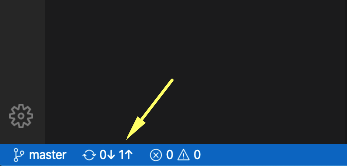
It should take 5-30 seconds to finish the commit. The blue bar should stop rotating and indicate 0 problems…
Now let’s take a second look to make sure everything looks the way you intended. If not, now is the time for us to fix it up. The playbook below should execute successfully.
---
- name: This is a play within a playbook
hosts: windows
vars:
iis_sites:
- name: 'Ansible Playbook Test'
port: '8080'
path: 'C:\sites\playbooktest'
- name: 'Ansible Playbook Test 2'
port: '8081'
path: 'C:\sites\playbooktest2'
iis_test_message: "Hello World! My test IIS Server"
tasks:
- name: Install IIS
ansible.windows.win_feature:
name: Web-Server
state: present
- name: Create site directory structure
ansible.windows.win_file:
path: "{{ item.path }}"
state: directory
loop: "{{ iis_sites }}"
- name: Create IIS site
community.windows.win_iis_website:
name: "{{ item.name }}"
state: started
port: "{{ item.port }}"
physical_path: "{{ item.path }}"
loop: "{{ iis_sites }}"
notify: restart iis service
- name: Open port for site on the firewall
community.windows.win_firewall_rule:
name: "iisport{{ item.port }}"
enable: yes
state: present
localport: "{{ item.port }}"
action: Allow
direction: In
protocol: Tcp
loop: "{{ iis_sites }}"
- name: Template simple web site to iis_site_path as index.html
ansible.windows.win_template:
src: 'index.html.j2'
dest: '{{ item.path }}\index.html'
loop: "{{ iis_sites }}"
- name: Show website addresses
ansible.builtin.debug:
msg: "{{ item }}"
loop:
- http://{{ ansible_host }}:8080
- http://{{ ansible_host }}:8081
handlers:
- name: restart iis service
ansible.windows.win_service:
name: W3Svc
state: restarted
start_mode: auto
Step 6 - Create Job template
Before we can create our Job Template, you must first go resync your Project again. So do that now.
Tip
You must do this anytime you create a new base playbook file that you will be selecting via a Job Template. The new file must be synced to Controller before it will become available in the Job Template playbook dropdown.
To test this playbook, we need to create a new Job Template to run this
playbook. So go to Template and click Add and select Job Template
to create a second job template.
Complete the form using the following values, replace username as before.:
Danger
Your playbook targets the windows group. We have all test hosts in the inventory Workshop Example CC, you must place a limit on your job template!
If you target the complete windows group, you will automate all hosts, even those of your colleagues!
| Key | Value | Note |
|---|---|---|
| Name | IIS Advanced username | |
| Description | Template for iis_advanced | |
| Job Type | Run | |
| Inventory | Workshop Example CC | |
| Project | Ansible Workshop Project username | |
| Execution Environment | BSS EE - Windows | |
| Playbook | iis_advanced/site.yml |
|
| Credentials | Azure DevOps username | |
| Limit | Your single host as in your local inventory! | Do not target the windows group! |
| Options | Enable Fact Storage |
Danger
Did you set the limit?
Click SAVE and on the following page, select the Survey tab.
Create a new survey with following values:
| Key | Value | Note |
|---|---|---|
| Question | Please enter a test message for your new website | |
| Description | Website test message prompt | |
| Answer Variable Name | iis_test_message |
|
| Answer Type | Text | |
| Minimum/Maximum Length | Keep the defaults | |
| Default Answer | Be creative, keep it clean, we’re all professionals here |

Select SAVE and remember to flip the On switch 
Step 7 - Run new playbook
Now let’s run it and see how it works.
Select TEMPLATES.
Note
Alternatively, if you haven’t navigated away from the job templates creation page, you can scroll down to see all existing job templates.
Click the rocketship icon  for the IIS Advanced Job Template.
for the IIS Advanced Job Template.
When prompted, enter your desired test message.
After it launches, you should be redirected and can watch the output of the job in real time.
When the job has successfully completed, you should see two URLs to your websites printed at the bottom of the job output.
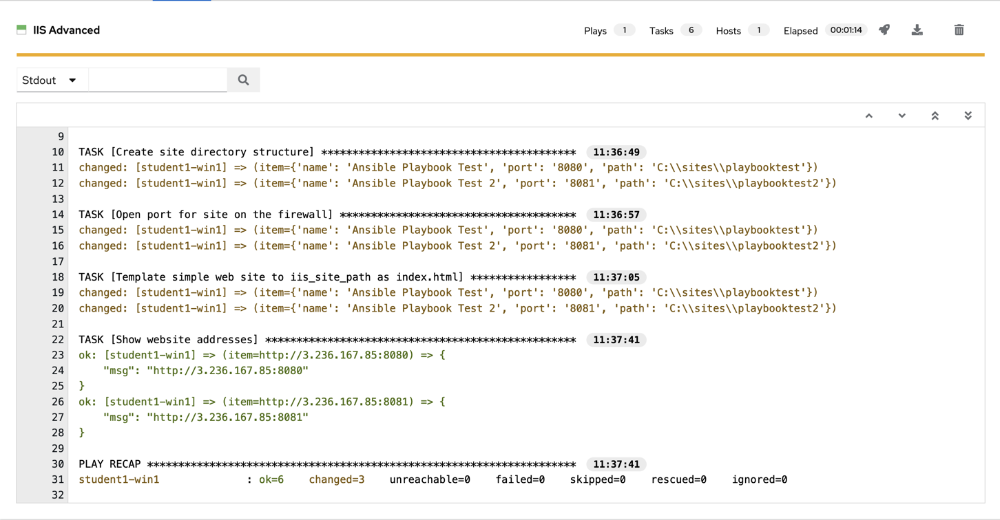
5 - Optional: Automated Patching
The win_updates module is used to either check for or to install Windows Updates. The module utilizes the built in Windows Update service to function. This means that you still will need a backend system like WSUS or the online Windows Update Servers to download updates from. If your server’s Windows Update configuration is set to automatically download but not install, you can also utilize the module to stage updates by telling it to search for updates. We also have the ability to whitelist or blacklist updates. For example we could tell it to only install one particular security update instead of every update available.
To begin, we are going to create a new playbook. We will be repeating the steps you performed in the earlier exercises.
Step 1 - Create folder structure
Within Visual Studio Code, we will now create a new directory in your git repository and create a new playbook file.
In the Explorer accordion you should have a student# section where you previously made iis_basic.
Hover over the WORKSHOP_PROJECT section and click the New Folder button. Type win_updates and hit enter.
Now right-click the win_updates folder and click the New File button. Type site.yml and hit enter.
You should now have an editor open in the right pane that can be used for creating your playbook.

Step 2 - Write Playbook
Edit your site.yml and add a play definition and some tasks to your playbook. This will cover a very basic playbook for installing Windows Updates. Typically you would have even more tasks to accomplish the entire update process. This might entail creating service tickets, creating snapshots, or disabling monitoring.
---
- hosts: windows
name: This is my Windows patching playbook
tasks:
- name: Install Windows Updates
ansible.windows.win_updates:
category_names: "{{ categories | default(omit) }}"
reboot: '{{ reboot_server | default(true) }}'
What are we doing?
The module win_updates is used for checking or installing updates. We tell it to only install updates from specific categories using a variable. reboot attribute will automatically reboot the remote host if it is required and continue to install updates after the reboot. We will also use a survey variable to stop us from rebooting even if needed. If the reboot_server value is not specified we will set the reboot attribute to true.
Step 3 - Save and Commit
Your playbook is done! But remember we still need to commit the changes to source code control.
Add the files to the local staging area.
Commit the changes by providing a commit message.
Sync to the remote Git.
Click File Save All to save the files you’ve written

Click the Source Code icon (1), type in a commit message such as Adding windows update playbook (2), and click the check box above (3).
Sync to the remote Git by clicking the arrows on the lower left blue bar.

It should take 5-30 seconds to finish the commit. The blue bar should stop rotating and indicate 0 problems…
Step 4 - Create Job Template
Now, back in Controller, you will need to resync your Project so that the new files show up.
Next we need to create a new Job Template to run this playbook. So go to Template, click Add and select Job Template to create a new job template.
Complete the form using the following values:
Danger
Your playbook targets the windows group. We have all test hosts in the inventory Workshop Example CC, you must place a limit on your job template!
If you target the complete windows group, you will automate all hosts, even those of your colleagues!
| Key | Value | Notes |
|---|---|---|
| Name | Windows Updates username | |
| Description | Template for Windows updates | |
| Job Type | Run | |
| Inventory | Workshop Inventory | |
| Project | Ansible Workshop Project username | |
| Execution Environment | BSS EE - Windows | |
| Playbook | win_updates/site.yml |
|
| Credentials | Azure DevOps username | |
| Limit | Your single host as in your local inventory! | Do not target the windows group! |
| Options | Enable Fact Storage |
Danger
Did you set the limit?
Click SAVE and then select ADD SURVEY

Complete the survey form with following values:
| Key | Value | Note |
|---|---|---|
| PROMPT | Categories | |
| DESCRIPTION | Which Categories to install? | |
| ANSWER VARIABLE NAME | categories | |
| ANSWER TYPE | Multiple Choice (multiple select) | There's also a single selection option |
| MULTIPLE CHOICE OPTIONS | Application Connectors CriticalUpdates DefinitionUpdates DeveloperKits FeaturePacks Guidance SecurityUpdates ServicePacks Tools UpdateRollups Updates |
|
| DEFAULT ANSWER | CriticalUpdates SecurityUpdates |
|
| REQUIRED | Selected | |

Once complete, click the ADD  button. You will see your new field off to the right. Now add another field by filling out the form on the left again.
button. You will see your new field off to the right. Now add another field by filling out the form on the left again.
| Key | Value | Note |
|---|---|---|
| PROMPT | Reboot after install? | |
| DESCRIPTION | If the server needs to reboot, then do so after install | |
| ANSWER VARIABLE NAME | reboot_server |
|
| ANSWER TYPE | Multiple Choice (single select) | |
| MULTIPLE CHOICE OPTIONS | Yes No |
|
| DEFAULT ANSWER | Yes | |
| REQUIRED | Selected |

Select ADD , then select SAVE .
Back on the main Job Template page, select SAVE again.
Step 5 - Running the playbook
Now let’s run it and see how it works.
Select TEMPLATES.
Hint
Alternatively, if you haven’t navigated away from the job templates creation page, you can scroll down to see all existing job templates.
Click the rocketship icon  for the Windows Updates Job Template.
for the Windows Updates Job Template.
When prompted, enter select the update categories. Answer Yes to the Reboot after install? prompt and click NEXT.
After the job launches, you should be redirected and can watch the output of the job in realtime.